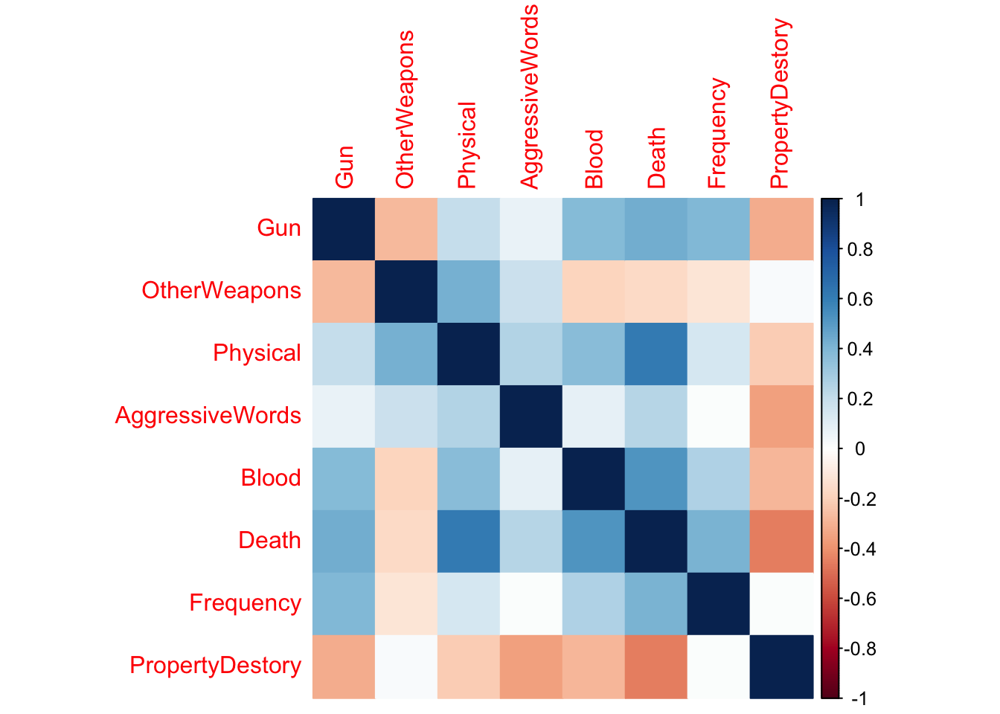

A foundational question always lies in the cognitive explorations of media pscyhology: effects of violent media on users’ psychological and behavioral responses. This topic has been a subject of ongoing debate and study among researchers, particularly in light of emerging media.
There’s been a shift in research focus to more dynamic multimedia experiences, such as violent video games. This shift recognizes the changing ways people, especially youth and young adults, consume entertainment.
Situating its analysis within the violent gaming context, this study examines this central question: How do popular reality-based violent video games portray violent crimes?
To explore the central question, this study utilizes a content analysis study, specifically looking at the frequency of various violent crime elements and the demographic characteristics of the perpetrators in the violent behaviors.
## [1] "NameofVideoGame" "Year" "Platform"
## [4] "ESRBratings" "Genre" "Feature"
## [7] "NumberPerpetrators" "Age" "Gender"
## [10] "Race" "Class" "Justified"
## [13] "Appearance" "NumberVictims" "Age2"
## [16] "Gender2" "Race2" "Fightback"
## [19] "Getarmed" "Gun" "OtherWeapons"
## [22] "Physical" "AggressiveWords" "Blood"
## [25] "Death" "Frequency" "Place"
## [28] "PropertyDestory"Here’s a brief description of our codebook!
Basic info about each game
Perpetrator features
Victim features
Violence features
This study only focus only violence video game with a American real-world based setting as scenarios of in-game narratives, including games that feature crime elements (e.g., gun use and violence justification) that are more frequently present in the context of real-world crime scenarios. These games are more likely to mirror certain aspects of real-world criminality happened in the United States.
A sample of 24 popular crime games was selected. This selection was made by referring to top-selling games on major platforms, with a particular focus on Steam due to its popularity and large user base. Additionally, we consulted popular entertainment media that rank top games (e.g., IMDB and Gameranx) to refine their selections.
summary(game)## NameofVideoGame Year Platform ESRBratings Genre
## Length:27 Min. :2000 Min. :1.000 Min. :2.000 Min. :1
## Class :character 1st Qu.:2005 1st Qu.:1.000 1st Qu.:4.000 1st Qu.:1
## Mode :character Median :2008 Median :2.000 Median :4.000 Median :1
## Mean :2009 Mean :3.148 Mean :3.852 Mean :2
## 3rd Qu.:2013 3rd Qu.:6.000 3rd Qu.:4.000 3rd Qu.:2
## Max. :2022 Max. :6.000 Max. :4.000 Max. :5
##
## Feature NumberPerpetrators Age Gender
## Min. :1.000 Min. :1.000 Min. :2.000 Min. :1.000
## 1st Qu.:1.000 1st Qu.:1.000 1st Qu.:3.000 1st Qu.:1.000
## Median :1.000 Median :1.000 Median :3.000 Median :1.000
## Mean :1.481 Mean :1.481 Mean :3.333 Mean :1.417
## 3rd Qu.:1.500 3rd Qu.:2.000 3rd Qu.:4.000 3rd Qu.:1.250
## Max. :3.000 Max. :3.000 Max. :5.000 Max. :3.000
## NA's :3
## Race Class Justified Appearance
## Min. :1.000 Min. :1.000 Min. :0.0000 Min. :1.00
## 1st Qu.:1.000 1st Qu.:1.000 1st Qu.:1.0000 1st Qu.:1.00
## Median :2.000 Median :1.000 Median :1.0000 Median :3.00
## Mean :2.667 Mean :1.619 Mean :0.7692 Mean :2.25
## 3rd Qu.:5.000 3rd Qu.:2.000 3rd Qu.:1.0000 3rd Qu.:3.00
## Max. :5.000 Max. :3.000 Max. :1.0000 Max. :3.00
## NA's :6 NA's :1 NA's :3
## NumberVictims Age2 Gender2 Race2 Fightback
## Min. :1.000 Min. :2.000 Min. :1.00 Min. :1 Min. :0.0000
## 1st Qu.:2.500 1st Qu.:3.000 1st Qu.:1.00 1st Qu.:1 1st Qu.:1.0000
## Median :4.000 Median :4.000 Median :1.00 Median :2 Median :1.0000
## Mean :3.148 Mean :3.963 Mean :1.68 Mean :3 Mean :0.8333
## 3rd Qu.:4.000 3rd Qu.:5.000 3rd Qu.:2.00 3rd Qu.:5 3rd Qu.:1.0000
## Max. :4.000 Max. :5.000 Max. :3.00 Max. :5 Max. :1.0000
## NA's :2 NA's :3
## Getarmed Gun OtherWeapons Physical
## Min. :0.0000 Min. :0.00 Min. :0.0000 Min. :0.0000
## 1st Qu.:1.0000 1st Qu.:1.00 1st Qu.:0.0000 1st Qu.:0.0000
## Median :1.0000 Median :1.00 Median :1.0000 Median :1.0000
## Mean :0.8148 Mean :0.88 Mean :0.6538 Mean :0.6296
## 3rd Qu.:1.0000 3rd Qu.:1.00 3rd Qu.:1.0000 3rd Qu.:1.0000
## Max. :1.0000 Max. :1.00 Max. :1.0000 Max. :1.0000
## NA's :2 NA's :1
## AggressiveWords Blood Death Frequency
## Min. :0.0000 Min. :0.0000 Min. :0.0000 Min. :1.000
## 1st Qu.:0.0000 1st Qu.:0.0000 1st Qu.:1.0000 1st Qu.:2.000
## Median :0.0000 Median :1.0000 Median :1.0000 Median :3.000
## Mean :0.4615 Mean :0.5385 Mean :0.8077 Mean :2.519
## 3rd Qu.:1.0000 3rd Qu.:1.0000 3rd Qu.:1.0000 3rd Qu.:3.000
## Max. :1.0000 Max. :1.0000 Max. :1.0000 Max. :3.000
## NA's :1 NA's :1 NA's :1
## Place PropertyDestory
## Min. :1.000 Min. :0.0000
## 1st Qu.:1.000 1st Qu.:0.0000
## Median :1.000 Median :1.0000
## Mean :1.259 Mean :0.5556
## 3rd Qu.:1.000 3rd Qu.:1.0000
## Max. :3.000 Max. :1.0000
## Our sample tends to feature single male perpetrators, often justified in their actions, engaging in frequent and severe forms of violence, primarily against male victims in urban settings.
According to 2011-2021 FBI data, in terms of types of weapon involved by offense, about 47% were different types of guns; and 36% of offenses involved knives or other cutting instruments. Additionally, in real-world crime, about 23% offenders are more likely to destroy property while committing crimes.
t.test(game$PropertyDestory,mu=0.23,alternative="greater")##
## One Sample t-test
##
## data: game$PropertyDestory
## t = 3.3407, df = 26, p-value = 0.001268
## alternative hypothesis: true mean is greater than 0.23
## 95 percent confidence interval:
## 0.3893416 Inf
## sample estimates:
## mean of x
## 0.5555556t.test(game$Gun,mu=0.47,alternative="greater")##
## One Sample t-test
##
## data: game$Gun
## t = 6.181, df = 24, p-value = 1.094e-06
## alternative hypothesis: true mean is greater than 0.47
## 95 percent confidence interval:
## 0.7665129 Inf
## sample estimates:
## mean of x
## 0.88t.test(game$OtherWeapons,mu=0.36,alternative="greater")##
## One Sample t-test
##
## data: game$OtherWeapons
## t = 3.0883, df = 25, p-value = 0.00244
## alternative hypothesis: true mean is greater than 0.36
## 95 percent confidence interval:
## 0.491319 Inf
## sample estimates:
## mean of x
## 0.6538462fig <- plot_ly(x = categories, y = vg_data, type = 'bar', name = 'Video Games Data', marker = list(color = 'red')) %>%
add_trace(y = fbi_data, name = 'FBI Data', marker = list(color = 'yellow')) %>%
layout(barmode = 'group', title = 'Violent video games(VVG) vs. FBI violent crime data')
figIn terms of all three variables, our results are statistically significant with very low p-values, indicating strong evidence against the null hypothesis (that video games do not overstate the prevalence of these forms of violence). Consequently, we can conclude that violent video games in our sample do indeed overstate the prevalence of violent crimes in terms of property destruction, the use of guns, and the use of other weapons, when compared to the real-world crime data provided by the FBI, given a 0.95 confidence level.
game2<-game
game2$Race<-as.factor(game$Race)
game2$Gender <- as.factor(game$Gender)
male <- subset(game2, Gender != 2)
chisq_test <- chisq.test(table(male$Race))
print(chisq_test)##
## Chi-squared test for given probabilities
##
## data: table(male$Race)
## X-squared = 6, df = 3, p-value = 0.1116Evidence in our sample is not strong enough to conclude there is a significant association between race representation and male perpetrators. However, given we only analyze games with specific context related to United States’ real world happening and the relatively small sample size, this results could be potentially influenced.
reg_1<-lm(Justified~Fightback+Getarmed+Appearance+Class,data=game)
reg_2<-lm(Frequency~Gun+OtherWeapons+Physical+Appearance+Class,data=game)
reg_3<-lm(Gun~Class+Appearance,data=game)
reg_4<-lm(Physical~Class+Appearance,data=game)
stargazer(reg_1,reg_2,reg_3,reg_4,type="text")##
## ================================================================================================
## Dependent variable:
## ----------------------------------------------------------------------------
## Justified Frequency Gun Physical
## (1) (2) (3) (4)
## ------------------------------------------------------------------------------------------------
## Fightback 0.166
## (0.235)
##
## Getarmed 0.018
## (0.208)
##
## Gun 0.913
## (0.547)
##
## OtherWeapons -0.214
## (0.265)
##
## Physical 0.444
## (0.266)
##
## Appearance -0.002 -0.106 -0.039 -0.096
## (0.076) (0.119) (0.049) (0.110)
##
## Class 0.104 -0.444** 0.053 0.023
## (0.096) (0.153) (0.067) (0.151)
##
## Constant 0.593** 2.531*** 0.950*** 0.836**
## (0.252) (0.734) (0.163) (0.365)
##
## ------------------------------------------------------------------------------------------------
## Observations 21 21 21 21
## R2 0.133 0.470 0.070 0.043
## Adjusted R2 -0.084 0.293 -0.033 -0.063
## Residual Std. Error 0.313 (df = 16) 0.496 (df = 15) 0.222 (df = 18) 0.498 (df = 18)
## F Statistic 0.613 (df = 4; 16) 2.660* (df = 5; 15) 0.680 (df = 2; 18) 0.403 (df = 2; 18)
## ================================================================================================
## Note: *p<0.1; **p<0.05; ***p<0.01violent_features <- game_clean[, c("Gun", "OtherWeapons", "Physical", "AggressiveWords", "Blood", "Death", "Frequency", "PropertyDestory")]
numeric_data <- violent_features[, colSums(is.na(violent_features)) < nrow(violent_features)]
numeric_data <- violent_features[, sapply(violent_features, function(x) var(x, na.rm = TRUE) > 0)]
cor_matrix <- cor(violent_features, use = "pairwise.complete.obs", method = "pearson")
corrplot(cor_matrix, method = "color")
This content analysis study illuminated several patterns in the portrayal of violence, perpetrators, and victims. This study has substantiated that the frequency and justification of violence within these games tend to be heightened compared to real-world data. Games in the sample have a tendency to feature violence that is more often justified within the narrative, with frequent use of guns and significant instances of death, which exceeds the prevalence observed in FBI crime statistics. This over-representation could have implications for perceptions of violence and criminal behavior among players, particularly considering the popularity of such games among youth and young adults.
This study also delved into racial, ethnic, and gender representations of perpetrators and victims, seeking correlations that might suggest stereotyping. While the results did not conclusively support the hypothesis that violent video games overrepresent non-white males as perpetrators, it did highlight the dominance of male characters in these roles, with a tendency towards certain races. The nuanced portrayals of violence, where stronger perpetrators are slightly less likely to use guns and richer perpetrators more so, offer a complex picture of how violence is depicted in gaming narratives. our analysis contributes to the broader discourse on the impact of media on social perceptions and user psychology, emphasizing the role that content creators play in either challenging or reinforcing existing societal narratives.